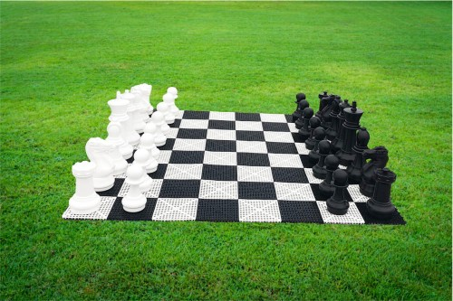

Szachy
O szachach
Za kolebkę szachów uznawane są Indie. Według źródeł pisanych gra ta była już znana w Persji na dworze szacha Chosrowa I Anoszirwana w latach 70. VI wieku naszej ery, gdzie przywieziona została w darze od indyjskiego radży. Indyjska czaturanga została w Persji przekształcona w czatrang, a po opanowaniu tego kraju przez Arabów uległa kolejnym przemianom, po których powstał szatrandż. Kolejna ewolucja nastąpiła po pojawieniu się gry w Europie, nastąpiły wówczas zmiany najbardziej przypominające współczesną grę w szachy (zmieniono reguły gry, dopracowano zasady poruszania się bierek, pojawiły się dodatkowo roszada, mat, promocja, itp).
Z Sycylii i południowej części Półwyspu Iberyjskiego szachy zostały przeniesione do Włoch i Hiszpanii, a następnie do Francji, Niemiec, Anglii i Skandynawii, gdzie były znane w X–XI wieku. W tym również czasie pojawiły się w Czechach, przywiezione przez kupców podążających z Włoch na północ kontynentu. Na Rusi szachy pojawiły się prawdopodobnie wcześniej, ok. VIII–IX wieku, bezpośrednio ze Wschodu (Iranu i środkowej Azji). Na ziemie polskie trafiły na kilka sposobów: z Czech, poprzez morskie szlaki handlowe oraz z Rusi Kijowskiej. O kultowym wymiarze gry szachowej informuje komediowy poemat Szachy Jana Kochanowskiego odkrywający charakterystyczne dla Polski nazwy i interpretacje figur szachowych. Zgodnie z Kochanowskim była to gra królewska, choć uwielbiali ją też szlachcice i mieszczanie. Interesujące jest też wspomnienie o mistrzach, „starszych”, którzy poznali szachy na poziomie wręcz ezoterycznym.
